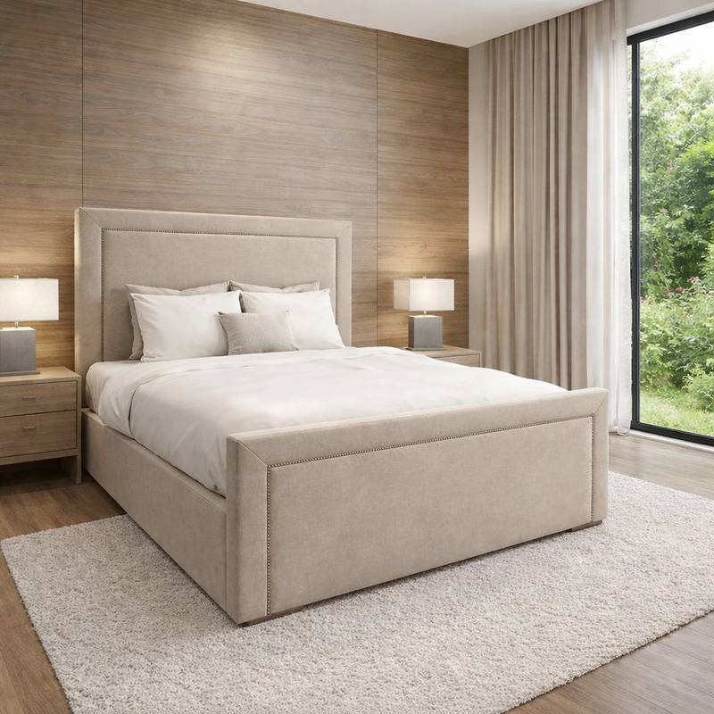
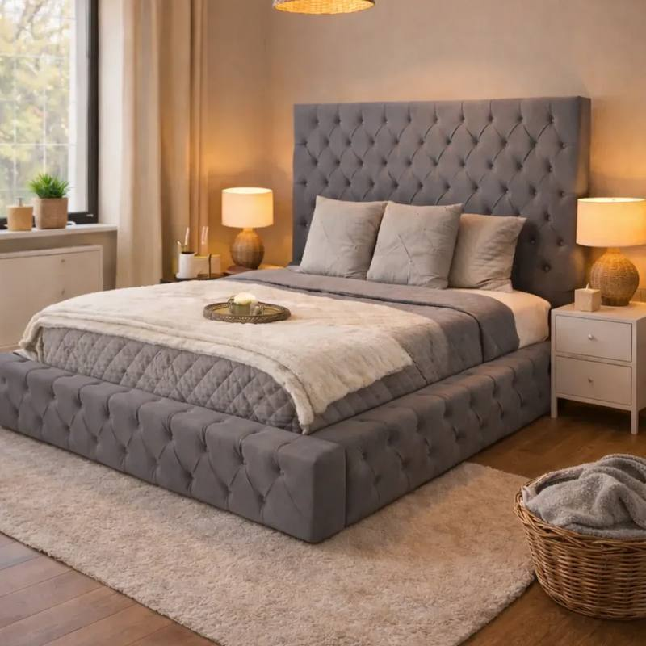
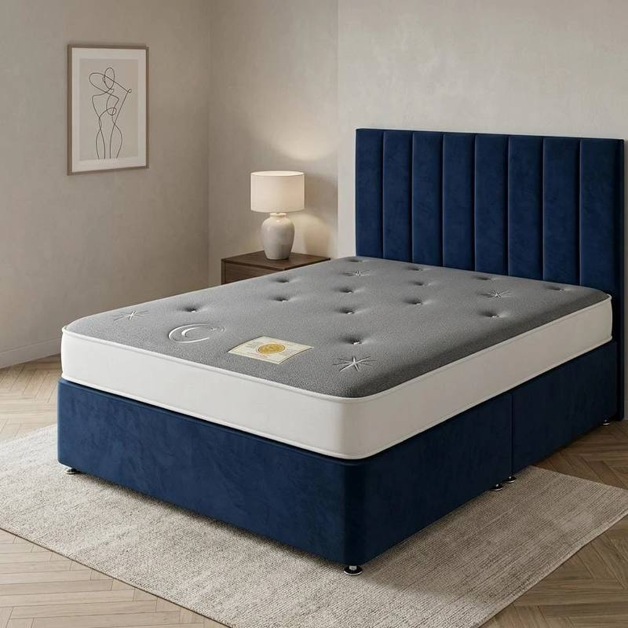
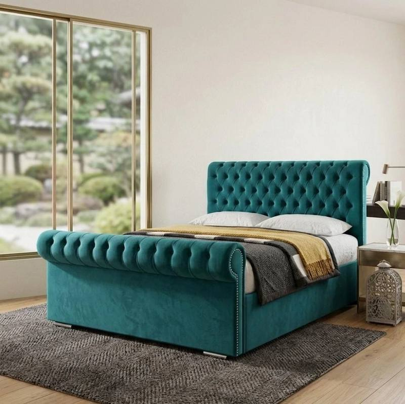
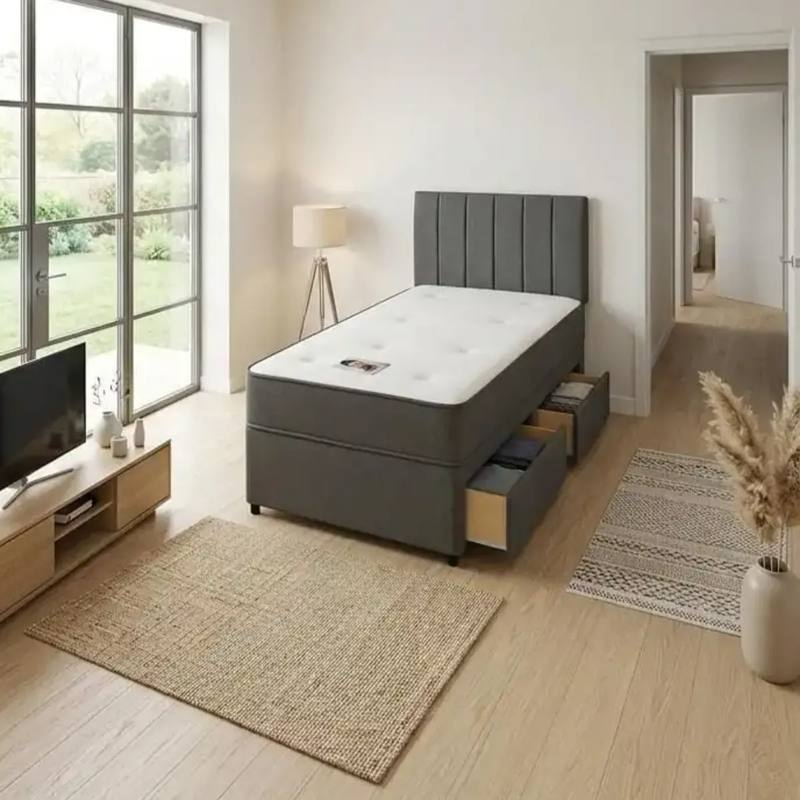
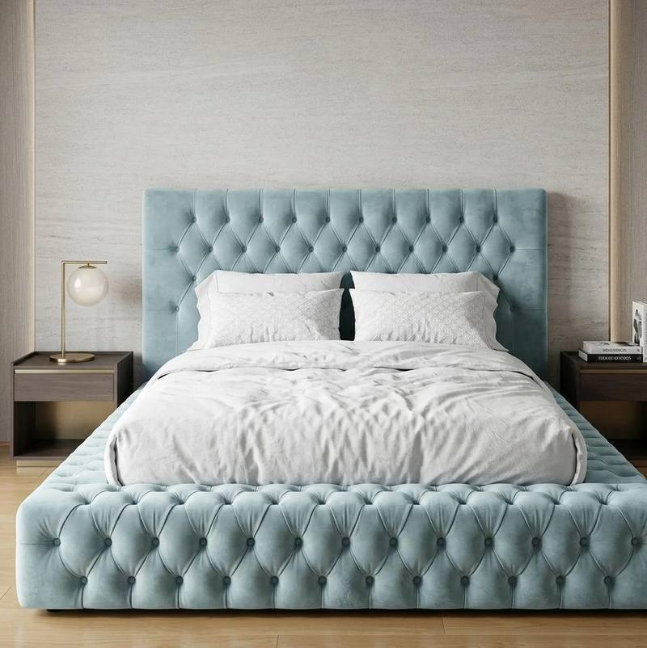

Home › Best Mattresses UK 2026
6 Best Mattresses in the UK (2026)
Updated for 2026 · Prices checked in £ · UK standard sizes.
In short: most UK sleepers do best on a medium-firm mattress — memory foam for couples (no movement transfer), pocket sprung for hot sleepers, hybrid for the best of both. Budget £250–£600 for a quality double, replace every 7–8 years, and always match the mattress size to your bed frame exactly.
Mattress marketing is some of the most confusing in all of furniture: "orthopaedic", "gel-infused", "7-zone" — half of it means very little. What actually matters is simpler: the right firmness for how you sleep, decent materials that don't sag in two years, and the correct UK size. We cut through the jargon to pick six mattresses that deliver genuinely good sleep at honest prices.
How we pick: materials and construction, firmness accuracy, durability reports from long-term buyers, sleep-trial terms and guarantees. Affiliate links may earn us a commission at no cost to you.
Full disclosure.
Quick reference: mattress types at a glance
| Type | Best for | Typical double price |
|---|
| Memory foam | Couples, side sleepers | £250–£500 |
| Pocket sprung | Hot sleepers, traditional feel | £300–£700 |
| Hybrid | Best all-rounder | £400–£800 |
| Orthopaedic | Firm-support back sleepers | £250–£550 |
1 · Best Memory Foam
Our Store PickFREE Delivery + COD

CloudRest Memory Foam Mattress — Double
★★★★★
£250
The CloudRest gets the memory-foam formula right: a 5 cm comfort layer over a supportive base, medium-firm feel, and a breathable cover that mitigates the heat-trapping memory foam is known for. Superb motion isolation — you won't feel a partner turning over.
| Size | Double 135 × 190 cm |
|---|
| Depth | 25 cm |
|---|
| Firmness | Medium-firm (7/10) |
|---|
| Trial / guarantee | 100-night trial, 10-year guarantee |
|---|
Pros
- Excellent motion isolation
- Good pressure relief for side sleepers
- Long trial and guarantee
Cons
- Still sleeps warmer than sprung
- Needs 48 hours to fully expand
2 · Best Pocket Sprung
Our Store PickFREE Delivery + COD

Heritage 1000 Pocket Sprung Mattress — King Size
★★★★☆
£650
A thousand individually pocketed springs with natural fillings (wool and cotton) — the traditional British mattress done properly. It breathes beautifully, feels supportive rather than sinky, and the hand-tufted finish holds the fillings in place for years.
| Size | King 150 × 200 cm |
|---|
| Depth | 27 cm |
|---|
| Firmness | Medium (6/10) |
|---|
| Trial / guarantee | 60-night trial, 8-year guarantee |
|---|
Pros
- Superb airflow — ideal for hot sleepers
- Natural fillings
- Classic supportive feel
Cons
- Heavy — rotate with two people
- More motion transfer than foam
3 · Best Hybrid
Our Store PickFREE Delivery + COD

Fusion Hybrid Mattress — Double
★★★★☆
£199
Can't decide between foam and springs? The Fusion layers memory foam over pocket springs, giving pressure relief up top with bounce and airflow below. It's the safest recommendation for couples with different preferences — genuinely the best all-rounder here.
| Size | Double 135 × 190 cm |
|---|
| Depth | 28 cm |
|---|
| Firmness | Medium-firm (7/10) |
|---|
| Trial / guarantee | 200-night trial, 10-year guarantee |
|---|
Pros
- Best of both worlds
- Great for couples with different needs
- Generous trial period
Cons
- Pricier than pure foam or sprung
- Heavy at 30+ kg
4 · Best Orthopaedic
Our Store PickFREE Delivery + COD

OrthoPlus Firm Mattress — Double
★★★★☆
£270
"Orthopaedic" has no legal definition in the UK — it just means firm. The OrthoPlus is honestly firm (8.5/10) with a high-density core that won't sag, making it a solid choice for back sleepers and heavier builds. Side sleepers: look at the medium-firm options above instead.
| Size | Double 135 × 190 cm |
|---|
| Depth | 24 cm |
|---|
| Firmness | Firm (8.5/10) |
|---|
| Trial / guarantee | 100-night trial, 7-year guarantee |
|---|
Pros
- Seriously supportive for back sleepers
- Won't sag under heavier builds
- Good value
Cons
- Too firm for most side sleepers
- Minimal pressure relief
5 · Best Single
Our Store PickFREE Delivery + COD

SlimLine Single Memory Foam Mattress
★★★★☆
£199
Kids' rooms, guest rooms and bunk beds don't need a £500 mattress — they need a decent one. The SlimLine is a 15 cm memory-foam single that's comfortable, CertiPUR-certified (no nasty chemicals) and light enough to manhandle onto a top bunk.
| Size | Single 90 × 190 cm |
|---|
| Depth | 15 cm |
|---|
| Firmness | Medium (6/10) |
|---|
| Trial / guarantee | 100-night trial, 5-year guarantee |
|---|
Pros
- Excellent value
- Light and easy to move
- Certified foams
Cons
- Too thin for heavy adults as a main bed
- Basic cover
6 · Best King Size
Our Store PickFREE Delivery + COD

Grandeur King Size Pocket Sprung Mattress
★★★★☆
£580
Two thousand pocket springs across a king-size surface, with zoned support that's firmer at the hips and softer at the shoulders. Edge support is properly reinforced — you can sit on the side without sliding off. The premium pick for couples upgrading to king.
| Size | King 150 × 200 cm |
|---|
| Depth | 30 cm |
|---|
| Firmness | Medium-firm (7/10), zoned |
|---|
| Trial / guarantee | 100-night trial, 10-year guarantee |
|---|
Pros
- Superb zoned support
- Excellent edge support
- Luxurious feel
Cons
- Premium price
- Very heavy — professional delivery recommended
Quick buying tips
- Match your sleep position. Side sleepers need medium/medium-soft for shoulder and hip relief; back sleepers need medium-firm; front sleepers need firm.
- Use the sleep trial. Your body needs 3–4 weeks to adjust. A 100-night trial is only useful if you actually commit to the adjustment period.
- Protect it from day one. A £30 waterproof protector guards a £500 mattress — and most guarantees are voided by stains.
- Check the base. Foam mattresses need solid or closely-spaced slats (gaps under 7 cm); sprung mattresses are more forgiving.
- Measure your stairs. A king-size mattress doesn't bend around tight Victorian staircases — consider a mattress-in-a-box.
Mattress FAQs
What type of mattress is best for back pain?
A medium-firm mattress usually suits back pain best — firm enough to support the spine's natural curve, with enough give at the shoulders and hips. Orthopaedic (extra-firm) mattresses help some back sleepers but can cause pressure points for side sleepers.
Memory foam or pocket sprung — which is better?
Memory foam moulds to your body and isolates movement (good for couples) but can sleep warm. Pocket sprung mattresses breathe better and feel more traditional, with each spring responding independently. Hybrids combine both. Hot sleepers should lean sprung or hybrid.
How often should you replace a mattress in the UK?
Every 7–8 years is the standard guidance. Replace sooner if you wake with aches, the mattress visibly sags, or you sleep better in other beds. A mattress protector can add a year or two of life.
What mattress size do I need for a UK double bed?
A UK double mattress is 135 × 190 cm; a king is 150 × 200 cm; a single is 90 × 190 cm. Buy the mattress in exactly the same size as your bed frame — a 2 cm gap each side is normal, more than that means the wrong size.
Do mattresses in a box work as well as traditional ones?
Yes — vacuum-packed mattresses expand to full size within 24–72 hours and perform like traditional ones. They're far easier to get upstairs in UK homes with narrow staircases. Unwrap within a few weeks of delivery for best expansion.
You may also like: 7 Best Beds in the UK (2026) · How to Choose a Bed: UK Buying Guide